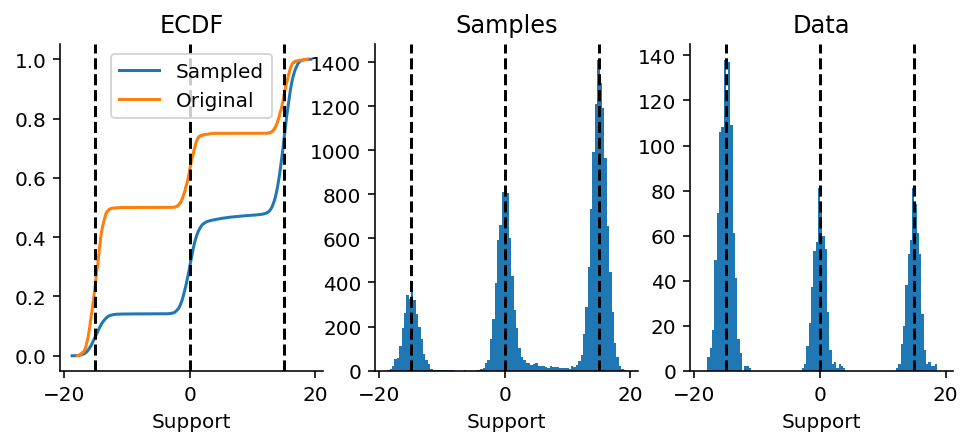
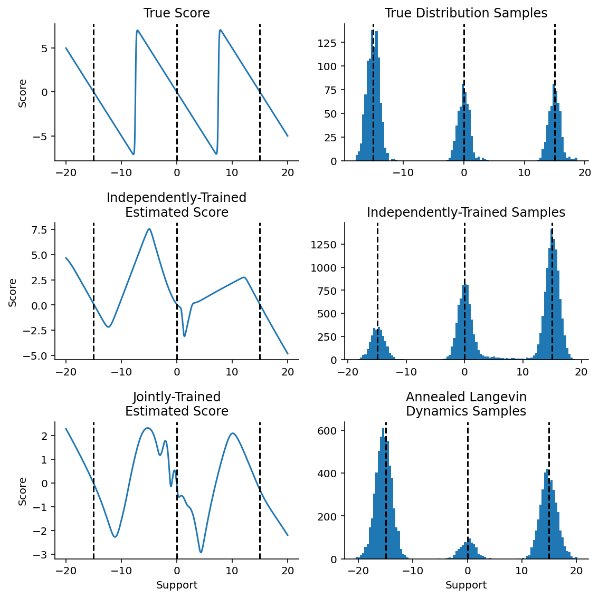

With a score function approximator, we have one small issue: in regions of low sample density, our estimate of the score function will be inaccurate, simply because we have few samples in those regimes. To get around this, we can:
perturb data points with noise and train score-based models on the noisy data points instead. When the noise magnitude is sufficiently large, it can populate low data density regions to improve the accuracy of estimated scores.
There is a huge tradeoff here, though: the larger the amount of perturbation, the greater the corruption of the input data. Let’s see that in action.
As always, we’ll start by generating some mixture Gaussian data.
Figure 4.1: Histogram and ECDF of two-component mixture Gaussian data.
In this case, we have intentionally spaced out the Gaussians to create a region of extremely low density (in the approximate region \((-5, 4)\)). As we’ll see later, in this region, the gradients will be really hard to estimate, and the errors in this region may be pretty large.
Next up, we’re going to perturb that data. What we do here is add standard Gaussian draws to each data point over 5 noising steps. Progressively, the draws should converge on a very smooth Gaussian.
fig, axes = plt.subplot_mosaic("""ABCDEFGHIJJJ""", figsize=(8, 10.5), sharex=True)ax_keys ="ABCDEFGHI"for i, (row, scale, ax_key) inenumerate(zip(data_perturbed, noise_scale, ax_keys)): plt.sca(axes[ax_key]) plt.hist(onp.array(row.flatten()), bins=100) plt.title(f"$\sigma$={scale}") plt.xlabel("Support")for loc in locations: plt.axvline(loc, color="black", ls="--")plt.sca(axes["J"])for row, scale inzip(data_perturbed, noise_scale): plt.plot(*ecdf(row.flatten()), label=f"$\sigma$={scale}")for loc in locations: plt.axvline(loc, color="black", ls="--")plt.legend()plt.xlabel("Support")plt.ylabel("Cumulative Fraction")plt.title("ECDF")sns.despine()plt.tight_layout()
Figure 4.2: Distribution of samples with and without perturbation. (Top three rows) Histograms of the data. (Bottom) Empirical cumulative distribution function of samples with differing levels of perturbation.
Should be evident from the figure above that when we add more noise, the data look more and more like a single Gaussian and less like the original. Most crucially, in the regions of low density between the two mixture Gaussians (the flat regime in the blue line), we have a region of high density in the perturbed distributions (the red line in the same region). We should be able to obtain accurate score models for the perturbed data in the regime of low density support (on the blue curve). As we will see later, this will help us obtain slightly more accurate score models for the blue curve’s flat region. In theory, if we were to reverse the process, we should get back our original data distribution.
4.2 Sampling using the score function
OK! With this, we are now ready to start sampling! This is the logic that we’re going to follow. We know that the last perturbation’s score models are going to be more accurate on the perturbed distribution, but it’s also going to be less accurate about the original distribution. To recap, we’re going to need a score model that approximates the score function of our data and a Langevin dynamics sampler for generating new data.
fig, axes = plt.subplots(figsize=(8, 3), ncols=3, nrows=1, sharex=True)plt.sca(axes[0])plt.plot(*ecdf(final_non_joint.flatten()), label="Sampled")plt.plot(*ecdf(data.flatten()), label="Original")for loc in locations: plt.axvline(loc, color="black", ls="--")plt.xlabel("Support")plt.title("ECDF")plt.legend()plt.sca(axes[1])plt.hist(onp.array(final_non_joint.flatten()), bins=100)for loc in locations: plt.axvline(loc, color="black", ls="--")plt.xlabel("Support")plt.title("Samples")plt.sca(axes[2])plt.hist(onp.array(data.flatten()), bins=100)for loc in locations: plt.axvline(loc, color="black", ls="--")plt.xlabel("Support")plt.title("Data")sns.despine()

Figure 4.3: Final samples from 10,000 particles run for 100 sampling steps, shown as (a) a histogram, and (b) an ECDF alongside the original data.
OK, yes, we’re able to! Looking at the distributions, notice how the mixture weights are a bit different between the samples and the data. However, we should notice that the middle Gaussian has a long tail of samples. This implies something wrong with gradient estimation. The problem here is either due to a lack of training budget (2,000 steps only) or because it is genuinely difficult to estimate gradients in that regime. The latter is what Yang Song states as the main issue.
Let’s also do a side-by-side comparison of gradients for the original data v.s. the true score function of the mixture model.
Figure 4.4: Estimated gradients for the original data.
The gradients diagnostic here should also be quite illuminating. In particular, there are regions where the gradient estimation is way off. That is where the next point might come in handy.
4.3 One score model per perturbation
One key idea in Yang Song’s blog post is that we can jointly train score models for each of the noise levels and then use Langevin dynamics in an annealed fashion to progressively obtain better and better samples from the original data distribution. The loss function here is a weighted sum of Fisher divergences, or, more simply, a sum of score model losses weighted by the noise scale applied to the data. The intuition here is that we weigh more heavily the strongly perturbed data and weigh less heavily the weakly perturbed data, because the score model will be more accurate for the strongly perturbed data. Thinking downstream two steps, we will be using a procedure called annealed Langevin dynamics to sample from this mixture Gaussian, such that In our example, we will have a batch of models trained with a single loss function, one for each scale value, which is the weighted sum of Fisher divergences,
from functools import partial
Firstly, we start with a vmap-ed version of our model. This will make it easy for us to train a batch of models together.
from pyprojroot import here import cloudpickle as pkldef make_model(key): ffmodel = FeedForwardModel1D( depth=2, width_size=512, activation=nn.softplus, key=key )return ffmodelkey = random.PRNGKey(49)keys = random.split(key, len(noise_scale))models = []for key in keys: models.append(make_model(key))
Next, we define our joint loss function. Here, the loss function is a weighted sum of score matching losses. In related body of work, the greater the noise scale, the higher the weight. The intuition here is that gradients are more accurately estimated at higher noise scales, while gradients are less accurately estimated at lower noise scales. For fairness in comparison, we will use the same number of training steps are before for independently-trained models.
We’re now going to do a quick sanity-check: our trained score models should be usable to sample from the mixture distribution. Let’s confirm that before proceeding.
Figure 4.5: Sanity check of sampling. (left) ECDF of samples vs. original data. Histogram of (middle) samples and (right) original data are also shown.
4.5 Annelaed Langevin Dynamics Sampling
Annealed Langevin dynamics sampling is a way to get around the problem of poorly estimated gradients in low density regions. The procedure is rather simple and elegant. We start by performing Langevin dynamics sampling at the highest noise value. After a fixed number of steps, we freeze the samples and use them as the starting point for sampling at the next highest noise value, progressively stepping down the noise until we hit the unperturbed data. In doing so, we ensure that the score function can be progressively estimated around regions of high density while progressively worrying less and less about the low density gradients.
Figure 4.6: Annealed Langevin dynamics samples at varying noise scales. Data (bottom-right) is shown for comparison.
Let’s also compare samples taken from jointly trained vs. independently trained models alongside their estimated score functions.
Code
support = np.linspace(-20, 20, 1000).reshape(-1, 1)fig, axes = plt.subplot_mosaic("""ADADBEBECFCF""", figsize=(8, 8))# First subplot: show gradients for noise scale 1.0 and for ground truth.plt.sca(axes["A"])true_score = vmap(true_score_func)(support.squeeze())plt.plot(support, true_score, label="True")plt.title("True Score")plt.ylabel("Score")plt.sca(axes["B"])independent_score = vmap(updated_model)(support)plt.plot(support, independent_score, label="Independent")plt.title("Independently-Trained\nEstimated Score")plt.ylabel("Score")plt.sca(axes["C"])joint_score = vmap(updated_models[0])(support)plt.plot(support, joint_score, label="Joint")plt.title("Jointly-Trained\nEstimated Score")plt.xlabel("Support")plt.ylabel("Score")plt.sca(axes["D"])plt.hist(onp.array(data.flatten()), bins=100)plt.title("True Distribution Samples")plt.sca(axes["E"])plt.hist(onp.array(final_non_joint.flatten()), bins=100)plt.title("Independently-Trained Samples")plt.sca(axes["F"])plt.hist(onp.array(final_points_history[-1].flatten()), bins=100)plt.title("Annealed Langevin\nDynamics Samples")plt.xlabel("Support")for axname, ax in axes.items(): plt.sca(ax)for loc in locations: plt.axvline(x=loc, ls="--", color="black")plt.tight_layout()sns.despine()

Figure 4.7: Comparison between true (top), independently trained (middle) and jointly trained (bottom) score models. (left) Score models evaluated along the support. (right) Samples drawn from true distribution (right-top) and by Langevin dynamics sampling (right middle and right bottom).
While it’s tempting to look at the peaks, the region of low density is where we should focus our attention. In the middle row’s samples, we see that the independently-trained model has a long tail of density between the middle component and the right component, something that is missing in the true distribution’s draws and in the annealed samples. The same can be seen on the left side, where we see the estimated score function taking on a rather inaccurate shape in that low density regime.